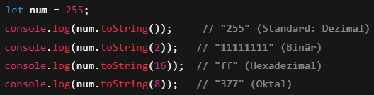
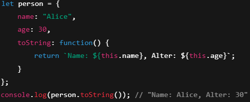
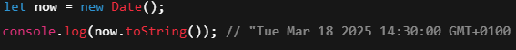

Datatypes:
primitive-Datentypen:
Diese Datentypen enthalten einfache Werte und werden direkt im Speicher gespeichert.
- String
- Number
- Bigint
- Undefined
- Null
- Symbol
- Objekt
- Booleans
Ein String (oder Text-String) ist eine Folge von Zeichen, wie "John Doe".
Strings werden in Anführungszeichen geschrieben. Du kannst einfache oder
doppelte Anführungszeichen verwenden
Du kannst Anführungszeichen innerhalb eines Strings verwenden, solange sie
nicht mit den Anführungszeichen übereinstimmen, die den String umschließen:
Alle JavaScript-Zahlen werden als Dezimalzahlen (Gleitkommazahlen) gespeichert.
Zahlen können mit oder ohne Dezimalstellen geschrieben werden.
Alle JavaScript-Zahlen werden im 64-Bit-Gleitkommaformat gespeichert.
JavaScript BigInt ist ein neuer Datentyp (ES2020), der verwendet werden kann,
um Ganzzahlen zu speichern, die zu groß sind, um mit einer normalen
JavaScript-Number dargestellt zu werden.
Ermöglicht die Darstellung extrem großer Ganzzahlen
Eine Variable ohne einen Wert, hat den Wert "undefiniert". Der Typ is ebenso undefiniert.
Absichtlich kein Wert
Erzeugt einzigartige Werte, die nicht dupliziert werden können
Wird oft für Objektschlüssel verwendet
JavaScript objekte werden mit geschwungenen Kllammer {} geschrieben.
Objekt Eigenschaften werden mit Kommas getrennt.
Booleans können nur zwei Werte haben: true oder false.
Was passiert wenn ich 10+"Apfel" schreibe?
JavaScript erkennt "10" und "Apfel als String daraus Folgt: "10Apfel"
Was passiert wenn ich 0.1 + 0.2 schreibe?
JavaScript erkennt die Werte als float daraus Folgt: 0.3
toString()-Funktion:
Die Methode toString() wird in JavaScript verwendet, um einen Wert in
eine Zeichenkette (string) umzuwandeln.
- Grundlegende Verwendung:
- mit verschiedenen Datentypen:
- mit Objecten
- mit Date
Die Methode gibt eine String-Darstellung des Werts zurück
Die toString()-Methode kann auch eine Zahl in verschiedenen Zahlensystemen ausgeben.
Bei normalen Objekten gibt toString() standardmäßig "[object Object]" zurück.
Das Date-Objekt hat eine eigene Implementierung von toString(), die ein lesbares Datum zurückgibt.

valueOf()-Funktion:
Die valueOf()-Methode in JavaScript wird verwendet, um den primitiven Wert eines Objekts zu erhalten.
Das bedeutet, sie gibt die "einfache" Version eines Objekts zurück, die du in Berechnungen oder
Vergleichen verwenden kannst.
Wenn du mit Objekten wie Zahlen, Datum oder benutzerdefinierten Objekten arbeitest und diese in
Berechnungen verwenden möchtest, sorgt valueOf() dafür, dass sie in die richtigen "einfachen"
Werte (Zahlen, Strings, etc.) umgewandelt werden.
Funktionen
Was sind Funktionen
Funktionen sind ein fundamentales Konzept in der Programmierung und der Mathematik. Eine Funktion ist
ein Codeblock, der eine bestimmte Aufgabe ausführt und bei Bedarf mehrfach aufgerufen werden kann.
Funktionen nehmen oft Eingaben (Parameter) entgegen, verarbeiten diese und liefern ein Ergebnis
(Rückgabewert).
Wofür sind sie nützlich?
- Wiederverwendbarkeit
- Strukturierung & Lesbarkeit
- Wartbarkeit
- Reduzierung von Fehlern
- Parameter & Rückgabewerte
Einmal definierte Funktionen können mehrfach verwendet werden, ohne dass man den Code kopieren muss.
Der Code wird modular und leichter verständlich, weil komplexe Abläufe in kleinere Einheiten zerlegt werden.
Änderungen müssen nur in der Funktion vorgenommen werden, anstatt an mehreren Stellen im Code.
Durch die Kapselung({eigene Welt}) von Code in Funktionen werden Fehlerquellen minimiert und das Debugging erleichtert.
Funktionen können flexibel mit unterschiedlichen Eingabewerten arbeiten und Ergebnisse zurückgeben.
Eingabe Parameter
Eingabeparameter (auch Argumente genannt) sind Werte, die an eine Funktion übergeben werden, damit sie
innerhalb
der Funktion verwendet oder verarbeitet werden können.
Wie funktionieren Parameter in JavaScript?
- Eine Funktion kann keine, eine oder mehrere Parameter haben.
- Parameter werden in den runden Klammern () der Funktionsdefinition angegeben.
- Beim Aufruf der Funktion werden Werte (Argumente) an diese Parameter übergeben.
Arten von Parametern In JS
Das sind die normalen Parameter, die eine Funktion erwartet. Wenn diese beim Funktionsaufruf
nicht übergeben werden, erhalten sie den Wert undefined.

Man kann Standardwerte definieren, falls der Benutzer keinen Wert übergibt.

Funktionen können mehrere Parameter haben, die bei jedem Aufruf durch verschiedene Werte ersetzt werden.
Unterschied zwischen Parametern und Argumenten
Rückgabewerte
Ein Rückgabewert ist das Ergebnis, das eine Funktion nach ihrer Ausführung zurückliefert. In JavaScript wird
dafür das return-Keyword verwendet.
Wie funktioniert return?
- Eine Funktion kann mit return einen Wert zurückgeben.
- Nach return wird die Funktion sofort beendet.
- Falls return fehlt, gibt die Funktion undefined zurück.
"Pass by Value" vs. "Pass by Reference"
Diese Begriffe beschreiben, wie Werte an eine Funktion übergeben werden. Sie bestimmen, ob Änderungen innerhalb der
Funktion auch außerhalb der Funktion sichtbar sind.
Pass by Value (Wertübergabe)
"Pass by Value" bedeutet, dass eine Kopie des Wertes übergeben wird.
Änderungen innerhalb der Funktion betreffen nicht das Original.
Beispiel mit primitiven Datentypen (Pass by Value)
Primitiven Datentypen in JavaScript sind:
Number, String, Boolean, null, undefined, Symbol, BigInt.
Pass by Value einfach erklärt 🧐
Wenn du eine Variable an eine Funktion übergibst, wird eine Kopie des Wertes erstellt. Die Funktion
arbeitet nur mit dieser Kopie und ändert nicht das Original.
Beispiel mit einem Glas Wasser 💧
Stell dir vor, du hast ein Glas Wasser.
Dein Freund fragt nach einem Glas Wasser.
Anstatt dein Glas zu geben, füllst du ein neues Glas mit der gleichen Menge Wasser und gibst es ihm.
Dein Freund kann sein Glas Wasser trinken oder Zucker hinzufügen – aber dein Original-Glas bleibt unverändert!
Pass by Reference (Referenzübergabe)
"Pass by Reference" bedeutet, dass eine Referenz (Adresse im Speicher) übergeben wird.
Änderungen innerhalb der Funktion wirken sich auch außerhalb aus.
In JavaScript gilt das für Objekte, Arrays und Funktionen.
Pass by Reference einfach erklärt 🧐
Wenn du ein Objekt oder ein Array an eine Funktion übergibst, übergibst du keine Kopie, sondern eine Referenz auf das Original.
Das bedeutet: Wenn die Funktion das Objekt ändert, ändert sich auch das Original!
Beispiel mit einer Pizza 🍕
Stell dir vor, du und dein Freund teilen eine einzige Pizza.
Dein Freund fügt extra Käse hinzu.
Da ihr die gleiche Pizza teilt, kannst du den zusätzlichen Käse auch sehen und schmecken.
Die Pizza wurde verändert – nicht nur die Kopie!
Warum ist es wichtig zu wissen, wie Parameter übergeben werden?
Als Entwickler musst du verstehen, wie Werte in Funktionen übergeben werden, weil es sich direkt auf den Code und das
Verhalten deiner Programme auswirkt. Wenn du das Konzept von Pass by Value und Pass by Reference nicht kennst, kann es
zu unerwarteten Fehlern kommen.
- Vermeidung unerwarteter Änderungen an Daten
- Schutz von Originalwerten (Immutability)
- Effizienter Umgang mit Speicher und Performance
- Kontrolle über Seiteneffekte (Side Effects)
Wenn du ein Objekt oder ein Array an eine Funktion übergibst (Pass by Reference), kann die Funktion das Original
verändern, oft ohne dass du es merkst!
Manchmal möchtest du sichergehen, dass eine Funktion das Original nicht verändert.
Primitiven Werte (Pass by Value) sind leicht zu kopieren, weil sie klein sind.
Große Objekte oder Arrays werden per Referenz übergeben, weil das Kopieren zu viel Speicher und Zeit verbrauchen würde
"Pass by Reference" kann unerwartete Nebeneffekte (Side Effects) verursachen.
Wie funktioniert Rekursion?
Rekursion funktioniert in der Regel in zwei Phasen:
Rekursiver Aufruf:
Die Funktion ruft sich selbst mit veränderten Parametern auf, um das Problem zu verkleinern.
Basisfall:
Ein einfacher Fall, bei dem die Funktion nicht mehr rekursiv aufgerufen wird,
sondern die Antwort direkt zurückgegeben wird.